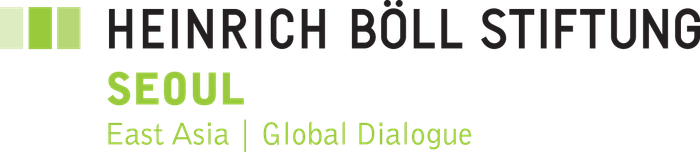
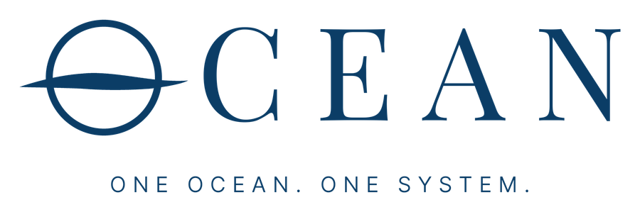

PLANiT Issue Brief No.1
녹색항로의 첫걸음: 기술을 넘어, 연결의 문제로
한국 조선·해운산업의 녹색항로 참여를 위한 산업·연구·시민사회의 공동 질문과 논의
핵심 메시지
녹색항로는 친환경 선박과 연료 기술만으로 실현되지 않는다. 선박을 건조하는 조선소, 선박을 운항하는 해운사, 대체연료를 저장·공급하는 항만과 연료 공급자, 화물을 맡기는 화주, 기술을 검증하는 연구기관, 감축의 기준과 정책 방향을 제시하는 시민사회가 서로의 실행 조건을 연결해야 첫 항해가 가능하다.
본 이슈 브리프는 한국 조선·해운산업이 녹색항로에 참여하려면 무엇을 준비해야 하고, 서로 어떤 역할과 협력이 필요한지를 묻는다. 각 주체가 제시하는 가능성과 제약, 참여 조건을 교차 검토하고, 그 답이 맞닿는 지점에서 후속 협력의 과제를 찾는다.
이슈 브리프의 핵심 목적
핵심 질문과 답변 기관
| 주제 | 답변 기관 | 목적 |
|---|---|---|
| 왜 참여해야 하는가 | PE, SFOC, 해운사, 대형·중형조선소 | ② |
| 기술과 산업은 어디까지 준비됐는가 | KRISO, RIMS, 세종대학교, 대형·중형조선소 | ① |
| 선박 한 척, 항로 하나가 사업이 되려면 | 해운사, 대형·중형조선소, 세종대학교, PE | ①② |
| 서로에게 무엇을 보장하고 위험을 어떻게 나눌 것인가 | 모든 참여 기관 | ③ |
| 무엇부터 시작할 것인가 | 모든 참여 기관 | ④ |
1. 왜 지금, 녹색항로를 함께 논의해야 하는가?
2026년 3월 제정된 「녹색해운항로 구축 지원 특별법」은 한국의 녹색항로 추진에 제도적 출발점을 마련했다. 녹색선박과 환경친화적 항만을 연결하는 항로의 지정과 구축·운영을 지원할 법적 기반이 생긴 것이다. 그러나 법이 열어준 것은 추진의 가능성이지, 실제 선박이 운항할 수 있는 조건의 완성은 아니다.
밖에서의 압력은 이미 현실이다. EU는 2024년부터 해운을 배출권거래제(EU ETS)에 포함했고, 2025년부터 FuelEU Maritime으로 선박 연료의 온실가스 원단위를 규제하고 있다. 유럽을 오가는 한국 선사는 이미 비용을 내고 있다. IMO 넷제로 프레임워크는 2025년 10월 채택이 연기됐지만, 국제해운의 탈탄소 방향 자체는 바뀌지 않았다. 규제가 확정되기를 기다리는 동안 준비가 늦어지면, 그 비용은 결국 한국 조선·해운산업이 치르게 된다.
녹색항로(Green Shipping Corridor)는 이러한 전환을 특정 해상운송 경로에서 구체화하려는 협력 모델이다. 선박, 연료, 항만, 물류의 탈탄소화를 따로따로 추진하는 대신, 실제 운송이 이루어지는 항로를 중심으로 필요한 조건을 함께 검토하고 구축한다.
본 이슈 브리프는 특정 항로를 전제하지 않는다. 이번 단계에서는 한국 조선·해운산업이 참여할 수 있는 녹색항로의 실행 조건을 폭넓게 살펴본다.
이를 위해 Pacific Environment(PE), 기후솔루션(SFOC), 세종대학교, 선박해양플랜트연구소(KRISO), 중소조선연구원(RIMS), 대형·중형조선소 및 해운사의 관점과 경험을 모은다. 이번 논의는 모든 참여 기관의 합의를 전제로 하지 않는다. 각자의 답변으로 가능성과 한계, 서로에게 필요한 조건을 확인하고, 그 접점에서 다음 단계의 과제를 찾는다.
2. 한국 조선·해운산업은 왜 녹색항로에 참여해야 하는가?
녹색항로의 필요성과 산업계의 참여 동기는 반드시 일치하지 않는다. 온실가스 감축이라는 공통 목표가 선박 발주와 운항 결정으로 이어지려면, 참여 주체가 감당할 비용과 위험뿐 아니라 참여로 얻을 가치가 분명해야 한다.
녹색항로는 한국 조선·해운산업에 새로운 기회인가, 추가적인 부담인가? 환경적 필요성과 산업적 이해가 만나는 지점은 어디인가?
- PE, SFOC: 녹색항로가 실질적인 감축으로 인정받으려면 어떤 기준(연료의 전과정 배출, LNG 등 화석연료 고착 위험 등)을 충족해야 하는가?
- 해운사: EU ETS·FuelEU 비용과 화주의 요구는 선대 전환 결정에 얼마나 영향을 주고 있는가?
- 조선소: 녹색항로가 친환경 선박 수주와 기술 경쟁력에 어떤 기회가 되는가?
[기관별 답변 수렴 후 작성]
이 질문은 녹색항로의 환경적 목표와 산업적 참여 동기를 함께 확인한다. 각 주체가 기대하는 가치와 참여를 결정하는 조건을 비교하여, 공통의 필요성과 서로 다른 이해관계를 살펴본다.
3. 녹색항로를 실현할 기술과 산업적 준비는 어디까지 와 있는가?
친환경 선박을 건조할 수 있다는 것과 그 선박을 녹색항로에 실제 투입할 수 있다는 것은 다른 문제다. 기술의 개발 수준뿐 아니라 선박의 종류와 규모, 대체연료의 특성, 안전성 검증, 실증 경험, 상용화 조건을 함께 살펴봐야 한다.
특히 대형선박과 중형선박은 기술 적용과 투자 여건이 다르다. 지금 쓸 수 있는 기술과 추가 검증이 필요한 기술을 구분하고, 연구개발의 성과가 실제 건조와 운항으로 이어지려면 무엇이 부족한지 확인해야 한다.
- 조선소: 연료별(암모니아, 메탄올, 수소 등) 선박 기술은 지금 수주할 수 있는 수준인가, 실증이 더 필요한 수준인가?
- 중형조선소, RIMS: 중형선박과 중소조선소가 겪는 기술·인증·자금의 제약은 무엇인가?
- KRISO, 세종대학교: 상용화 전에 남은 안전성·성능 검증 과제는 무엇이며, 얼마나 걸리는가?
[기관별 답변 수렴 후 작성]
이 질문은 기술개발, 실증, 건조, 상용화 사이의 간극을 파악한다. 대형·중형선박의 준비 수준과 산업적 제약을 구분하고, 실제 적용에 필요한 추가 연구와 검증 과제를 확인한다.
4. 선박 한 척, 항로 하나가 사업이 되려면
녹색항로의 실행 가능성은 해운사가 선박을 발주하고 지속적으로 운항할 수 있는지에서 검증된다.
대체연료의 가격과 공급 안정성, 선박 투자비, 출발항과 도착항의 벙커링 인프라, 화물 수요와 운임 구조는 서로 연결된 사업 조건이다. 특히 운항할 때마다 발생하는 연료비 격차는 일회성 투자 지원만으로 해결하기 어렵다.
- 해운사: 어떤 연료를, 기존 연료 대비 어느 정도의 비용 차이까지 감당할 수 있는가? 화주와는 어떤 계약 구조(장기 운송계약, 녹색 프리미엄 등)가 필요한가?
- 조선소: 선가 상승분과 인도 시점은 해운사의 발주 결정에 어떤 영향을 주는가?
- 세종대학교, PE: 선박 한 척과 항로 하나를 기준으로 사업성을 따질 때 가장 큰 변수는 무엇인가?
[기관별 답변 수렴 후 작성]
이 질문은 선박의 기술적 준비가 실제 발주와 운항으로 이어지기 위한 조건을 확인한다. 선박 투자, 연료 조달, 항만 인프라, 화물 수요, 정책 지원을 중심으로 단일 사업 단위의 제약과 해결 과제를 살펴본다.
5. 기술을 넘어, 무엇을 어떻게 연결해야 하는가?
녹색항로를 가로막는 것은 개별 주체의 역량 부족만이 아니다. 각 주체가 다른 주체의 결정을 기다리는 상호 의존 구조가 더 큰 장애요인이 될 수 있다.
해운사는 화물 수요와 연료 공급이 확보되어야 발주를 결정하고, 조선소는 발주가 있어야 건조와 상용화에 나선다. 연료 공급자와 항만은 장기 수요가 확인되어야 생산·저장·벙커링 인프라에 투자하고, 금융기관은 이 조건들이 갖춰져야 위험을 평가할 수 있다. 선박은 연료를 기다리고, 연료는 선박을 기다리는 구조에서는 기술이 준비되어 있어도 첫 항해가 시작되지 않는다.
따라서 누가 먼저 투자할 것인가에 앞서, 각 주체가 실행을 결정할 수 있도록 서로 무엇을 보장하고 비용과 위험을 어떻게 나눌지를 논의해야 한다. 화물 계약, 선박 발주, 연료 공급계약, 항만 투자, 금융·정책 지원이 어떤 순서와 조건으로 맞물릴 수 있는지가 핵심이다.
연구기관의 기술 검증은 산업계의 투자 불확실성을 줄이고, 시민사회는 녹색항로가 실질적인 감축으로 이어지도록 연료와 감축 효과의 기준을 제시한다.
- 우리 기관이 실행을 결정하려면 다른 주체에게 어떤 보장이 필요한가?
- 반대로 우리 기관은 다른 주체에게 무엇을 먼저 약속할 수 있는가?
- 항만, 연료 공급자, 화주, 금융기관, 정부에게 가장 필요한 역할은 무엇인가?
[기관별 답변 수렴 후 작성]
이 질문은 본 이슈 브리프의 중심 질문이다. 각 주체가 할 수 있는 역할과 다른 주체에게 요구하는 조건을 교차 검토하고, 선박·연료·항만·화물·금융·정책을 연결하는 협력 구조와 남은 과제를 확인한다.
6. 녹색항로의 첫걸음, 무엇부터 시작할 것인가?
모든 조건을 한 번에 충족할 수는 없다. 그러나 모든 조건이 완성될 때까지 기다릴 필요도 없다. 중요한 것은 지금의 준비 수준에서 무엇을 먼저 확인하고, 어떤 주체가 함께 움직일 수 있는지를 구체화하는 일이다.
출발점은 기술과 운항 조건의 공동 검토일 수도, 특정 선박과 화물 수요의 확인일 수도, 연료 공급과 벙커링 가능성 조사, 기술 실증, 비용·위험 분담 구조의 검토일 수도 있다. 이번 논의에서는 우선순위를 미리 정하지 않는다.
- 향후 1~2년 안에 시작할 수 있는 과제 하나를 꼽는다면 무엇인가?
- 그 과제를 함께할 주체는 누구이며, 우리 기관은 무엇을 맡을 수 있는가?
[기관별 답변 수렴 후 작성]
이 질문은 참여 주체가 제안하는 우선 과제를 모으고, 실행 가능성, 협력 필요성, 후속 검토 사항을 종합한다. 이를 바탕으로 구체적인 항로와 사업 논의로 발전시킬 수 있는 초기 과제를 도출한다.
맺음말 | 첫 항해의 조건을 찾아서
녹색항로의 첫걸음은 모든 준비가 끝난 뒤에 시작되지 않는다. 서로의 가능성과 한계를 확인하고, 각자의 실행 조건이 어디에서 맞닿는지 찾아가는 과정에서 시작된다.
다섯 가지 질문은 완성된 답을 요구하지 않는다. 산업계, 연구기관, 시민사회가 서로 다른 관점에서 내놓은 답을 연결하고, 그 안에서 첫 항해의 공통 조건과 남은 과제를 찾기 위한 것이다.
기술의 가능성을 실제 항해로 바꾸는 것은 결국 연결이다. 그 연결을 어디에서, 누구와, 무엇부터 시작할 것인가. 이번 논의는 그 첫 번째 답을 찾아가는 과정이다.